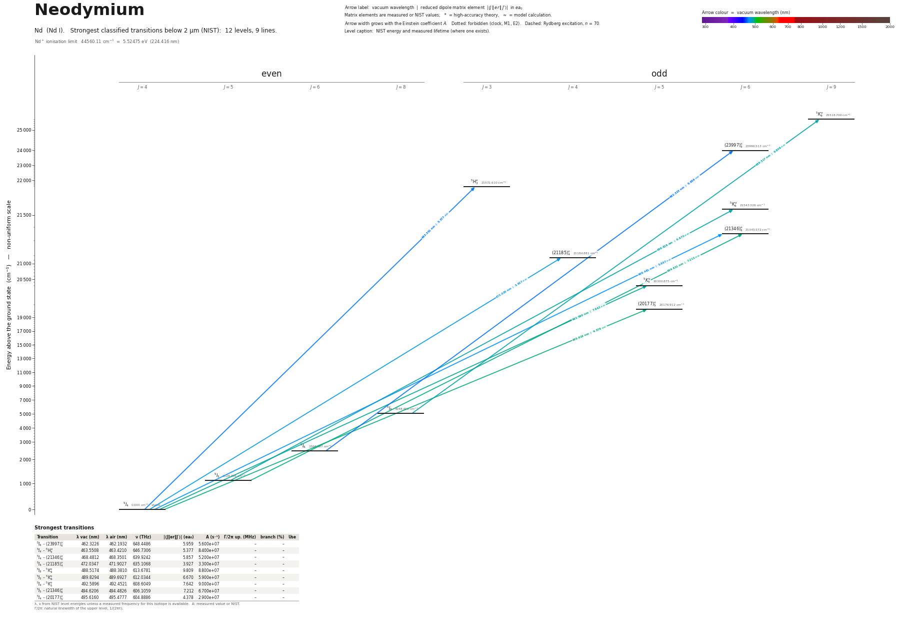

Neodymium energy level diagram
Energy levels and transitions of neutral neodymium (Nd I): the 9 strongest classified lines below 2 µm from the NIST Atomic Spectra Database and the 12 levels they connect, each line with its vacuum wavelength, frequency and, for 9 of them, the reduced dipole matrix element derived from the NIST transition rate. Lifetimes, hyperfine constants and isotope shifts from the literature have not been compiled for this element yet.
Hover a line or a level to isolate it, click to keep it selected. Scroll to zoom, drag to move.

Download: diagram (PDF) diagram (SVG) transitions (CSV) levels (CSV) source code

Strongest transitions of neodymium
| Transition | λ vac (nm) | λ air (nm) | ν (THz) | |⟨J‖er‖J′⟩| (ea₀) | A (s⁻¹) | Γ/2π up. (MHz) | branch (%) | Use |
|---|---|---|---|---|---|---|---|---|
| 5I6 – (23997)°6 | 462.3226 | 462.1932 | 648.4486 | 5.959 | 5.600e+07 | – | – | |
| 5I4 – 5H°3 | 463.5508 | 463.4210 | 646.7306 | 5.377 | 8.400e+07 | – | – | |
| 5I4 – (21346)°6 | 468.4812 | 468.3501 | 639.9242 | 5.857 | 5.200e+07 | – | – | |
| 5I4 – (21185)°4 | 472.0347 | 471.9027 | 635.1068 | 3.927 | 3.300e+07 | – | – | |
| 5I8 – 5K°9 | 488.5174 | 488.3810 | 613.6781 | 9.809 | 8.800e+07 | – | – | |
| 5I5 – 5K°6 | 489.8294 | 489.6927 | 612.0344 | 6.670 | 5.900e+07 | – | – | |
| 5I4 – 5K°5 | 492.5896 | 492.4521 | 608.6049 | 7.642 | 9.000e+07 | – | – | |
| 5I5 – (21346)°6 | 494.6206 | 494.4826 | 606.1059 | 7.212 | 6.700e+07 | – | – | |
| 5I4 – (20177)°5 | 495.6160 | 495.4777 | 604.8886 | 4.378 | 2.900e+07 | – | – |
λ, ν from NIST level energies unless a measured frequency for this isotope is available. A: measured value or NIST. Γ/2π: natural linewidth of the upper level, 1/(2πτ).
Listed Nd transitions below 2 µm
| Lower level | Upper level | λ vacuum (nm) | λ air (nm) | ν (THz) | Type | |⟨J‖er‖J′⟩| (ea₀) | A (s⁻¹) | Branching (%) | Source of matrix element / A |
|---|---|---|---|---|---|---|---|---|---|
| 5I6 | (23997)°6 | 462.3226 | 462.1932 | 648.4486 | E1 | 5.959 NIST | 5.600e+07 NIST | – | NIST ASD (accuracy n/a) |
| 5I4 | 5H°3 | 463.5508 | 463.4210 | 646.7306 | E1 | 5.377 NIST | 8.400e+07 NIST | – | NIST ASD (accuracy n/a) |
| 5I4 | (21346)°6 | 468.4812 | 468.3501 | 639.9242 | E1 | 5.857 NIST | 5.200e+07 NIST | – | NIST ASD (accuracy n/a) |
| 5I4 | (21185)°4 | 472.0347 | 471.9027 | 635.1068 | E1 | 3.927 NIST | 3.300e+07 NIST | – | NIST ASD (accuracy n/a) |
| 5I8 | 5K°9 | 488.5174 | 488.3810 | 613.6781 | E1 | 9.809 NIST | 8.800e+07 NIST | – | NIST ASD (accuracy n/a) |
| 5I5 | 5K°6 | 489.8294 | 489.6927 | 612.0344 | E1 | 6.670 NIST | 5.900e+07 NIST | – | NIST ASD (accuracy n/a) |
| 5I4 | 5K°5 | 492.5896 | 492.4521 | 608.6049 | E1 | 7.642 NIST | 9.000e+07 NIST | – | NIST ASD (accuracy n/a) |
| 5I5 | (21346)°6 | 494.6206 | 494.4826 | 606.1059 | E1 | 7.212 NIST | 6.700e+07 NIST | – | NIST ASD (accuracy n/a) |
| 5I4 | (20177)°5 | 495.6160 | 495.4777 | 604.8886 | E1 | 4.378 NIST | 2.900e+07 NIST | – | NIST ASD (accuracy n/a) |
Reduced dipole matrix elements follow the convention A = ω³|d|²/(3πε₀ħc³(2J′+1)), with J′ the upper level. Tags show where a number comes from: measured, NIST compilation, high-accuracy theory, or a model calculation.
Nd energy levels
| Level | Energy (cm⁻¹) | J | Parity | Lifetime | gJ | Hyperfine A (MHz) | Hyperfine B (MHz) | Lifetime source | Hyperfine source |
|---|---|---|---|---|---|---|---|---|---|
| 5I4 | 0.000 | 4 | even | stable | 0.60329 | – | – | – | – |
| 5I5 | 1128.056 | 5 | even | – | 0.90047 | – | – | – | – |
| 5I6 | 2366.597 | 6 | even | – | 1.0699 | – | – | – | – |
| 5I8 | 5048.602 | 8 | even | – | 1.2453 | – | – | – | – |
| (20177)°5 | 20176.912 | 5 | odd | – | 0.96 | – | – | – | – |
| 5K°5 | 20300.875 | 5 | odd | – | 0.775 | – | – | – | – |
| (21185)°4 | 21184.881 | 4 | odd | – | 0.92 | – | – | – | – |
| (21346)°6 | 21345.572 | 6 | odd | – | 0.975 | – | – | – | – |
| 5K°6 | 21543.326 | 6 | odd | – | 0.9 | – | – | – | – |
| 5H°3 | 21572.610 | 3 | odd | – | 0.65 | – | – | – | – |
| (23997)°6 | 23996.513 | 6 | odd | – | 1.045 | – | – | – | – |
| 5K°9 | 25518.700 | 9 | odd | – | 1.22 | – | – | – | – |
Nd⁺ ionisation limit 44560.11 cm⁻¹ = 5.52475 eV (224.416 nm)
Sources
Atoms with measured data
- Lithium-632 levels, 85 lines
- Lithium-732 levels, 85 lines
- Beryllium-915 levels, 24 lines
- Sodium-2336 levels, 106 lines
- Magnesium-2418 levels, 61 lines
- Magnesium-2518 levels, 61 lines
- Potassium-3934 levels, 84 lines
- Potassium-4034 levels, 84 lines
- Potassium-4134 levels, 84 lines
- Calcium-4035 levels, 61 lines
- Calcium-4335 levels, 61 lines
- Rubidium-8536 levels, 94 lines
- Rubidium-8736 levels, 94 lines
- Strontium-8740 levels, 70 lines
- Strontium-8840 levels, 70 lines
- Caesium-13331 levels, 79 lines
- Barium-13744 levels, 89 lines
- Barium-13844 levels, 89 lines
- Dysprosium-16339 levels, 55 lines
- Dysprosium-16439 levels, 55 lines
- Ytterbium-17118 levels, 26 lines
- Ytterbium-17418 levels, 26 lines